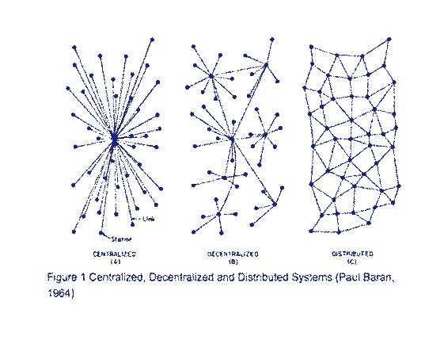

Desde o final do século XX e início do século XXI, vivemos um período histórico denominado de Era do Informação. Com a democratização da internet, as estruturas sociais e de comunicação se remodelaram em um modelo de distribuição de dados, onde se democratiza o acesso à informação e são subvertidas diversas hierarquias organizacionais e sociais.
Na ótica da psicanálise social, as redes promovidas pela internet estão revertendo o pensamento clássico de que cada indivíduo é um ser único e relativo. Segundo Barglow, 1994 “A mudança histórica das tecnologias mecânicas para as tecnologias da informação, ajuda a subverter a as noções de soberania e auto-suficiência que serviram de âncora ideológica à identidade individual desde que os filósofos gregos elaboraram o conceito, há mais de dois milênios.”
Assim que, com o surgimento da internet, pudemos observar uma re-adequação da sociedade às inovações tecnológicas contemporâneas. Vivemos um período de transformação dos conceitos de relações entre usuários, serviços, produtos e experiências.
Segundo Castells, as sociedades são determinadas historicamente pela produção, experiência e poder.
Produção, representa a ação da humanidade sobre a matéria (natureza) de modo a gerar benefício através dela, ou seja, criando produtos e consumindo parte deles, produzindo riquezas com o excedente e investindo esse valor em geração de outros valores.
Experiência, é a ação dos humanos sobre eles mesmos, determinadas pelas interações culturais e biológicas dos indivíduos e aqueles que ocupam os mesmos ambientes.
Poder é a relação entre os indivíduos de imposição de conceitos de uns sobre os outros, através da violência física, moral e simbólica.
Nessa nova estrutura social, que se manifesta em diversas maneiras, conforme o contexto social, cultural e organizacional em que se encaixa, os elementos de poder e de hierarquia de posse dos meios de produção que fomentaram a sociedade industrial e as instituições derivadas desse período histórico perderam sua relevância, em detrimento do acesso às experiências e vivências.
A experiência é o foco principal do ser humano pós-moderno e a materialidade perde a importância, quando questionada pela rede digital em que estamos inseridos. Assim, que os grandes produtos da atualidade são aqueles que oferecem serviços de gestão e organização de bens já existentes, para que através destes, sejam incorporados serviços acessíveis a diversas parcelas da população, muitos que anteriormente eram reduzidos à uma pequena elite.
"Numa sociedade pós-industrial, em que os serviços culturais substituíram os bens materiais no cerne da produção, é a defesa da personalidade e cultura do sujeito contra a lógica dos aparatos e mercados que substitui a luta de classes. - Touraine, citado por Castells
No cenário atual, o papel das empresas do seguimento da inovação é possibilitar a conexão entre pessoas, assim permitindo que estas participem de redes de compartilhamento horizontal, atendendo às demandas cotidianas.
O papel do designer de produto - que até pouco tempo era colocado como mão-de-obra de uma sociedade industrial e capitalista, restrito à elaboração e viabilização de produtos materiais - completamente dependentes de uma sociedade industrial e de modos de produção opressores fundamentados em sistemas de hierarquia, domínio de classes e da força de trabalho - se transformou e se adaptou ao cenário atual, enxergando suas potencialidades metodológicas na compreensão de problemas e das necessidades de pessoas e grupos, viabilizando a concepção e prototipação de soluções, e por consequência criação de novos valores para outros meios não-materiais.
“Uber, a maior empresa de táxi do mundo, não tem carros. Facebook, a mídia mais popular do mundo, não cria conteúdo. Alibaba, a varejista mais valiosa do mercado, não tem estoque. E Airbnb, a maior provedora de hospedagem do mundo, não possui qualquer imóvel. Algo interessante está acontecendo”
- CEO da Red Hat, Jim Whitehurst
Os mesmo artefatos que nos imergem em dados e informações a todo momento, possibilitam a conexão e comunicação instantânea, são os mesmos que tornam nossa realidade cada vez mais complexa e expandem as possibilidades na criação de novas relações e processos sociais.
These problems span traditional disciplines, so we cannot just hand them to subject area experts. More problematic, most of these challenges don’t sit still. They change as the world changes. - Scott E. Page
Para esses problemas complexos, não encontraremos soluções nos dados ou nos artefatos tecnológicos. Esses elementos são apenas ferramentas para uma mudança muito maior. Segundo Scott E. Page, professor de Modelos de Pensamento na Universidade de Michigan, nesse momento complexo precisamos de conhecimento e sabedoria. Sendo conhecimento o uso aplicado de diversos informações e sabedoria, a sensibilidade em reconhecer quais conhecimentos devem ser aplicados à cada área do saber.